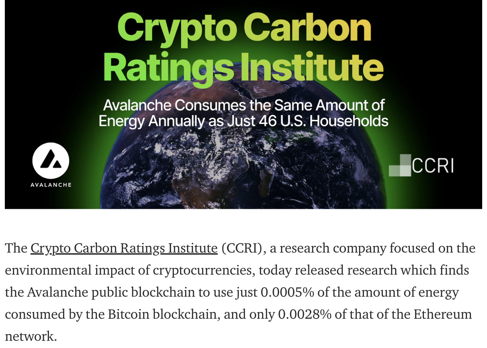
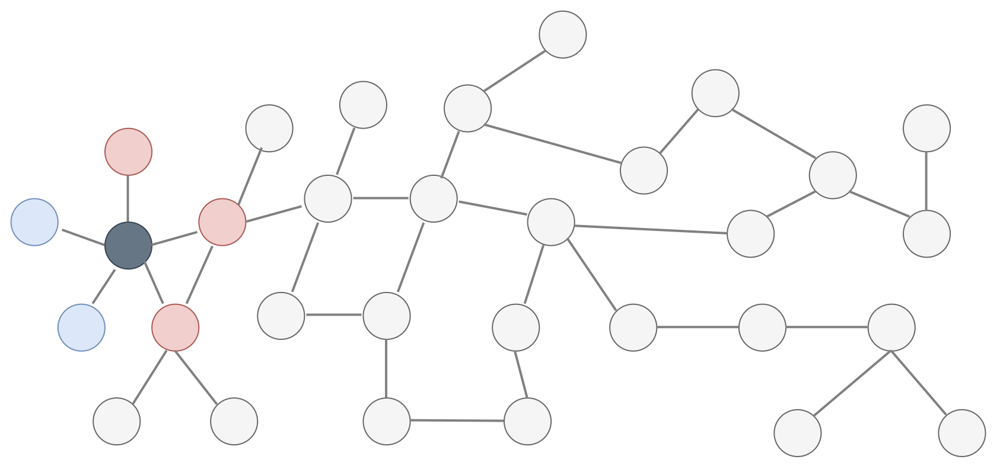
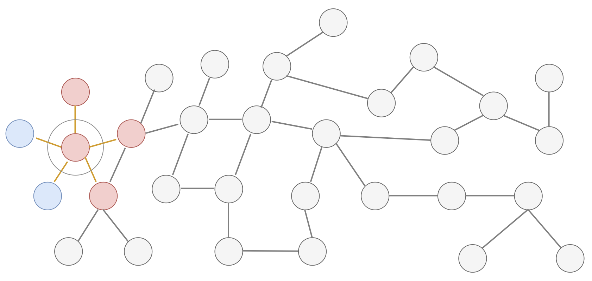
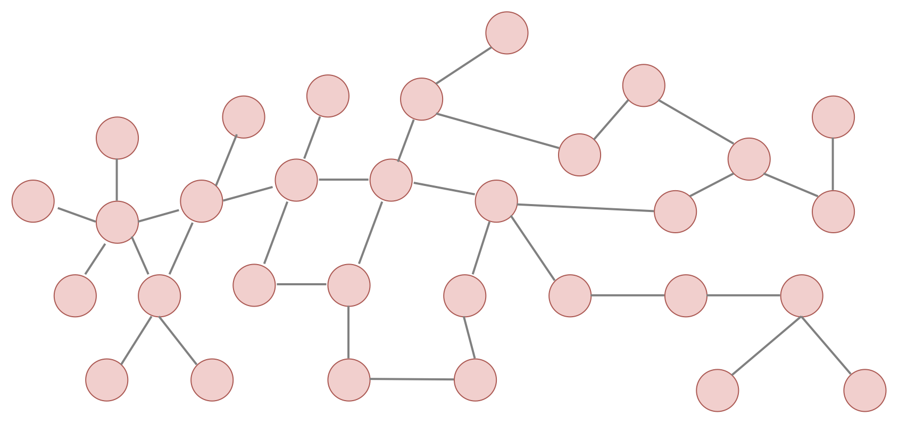
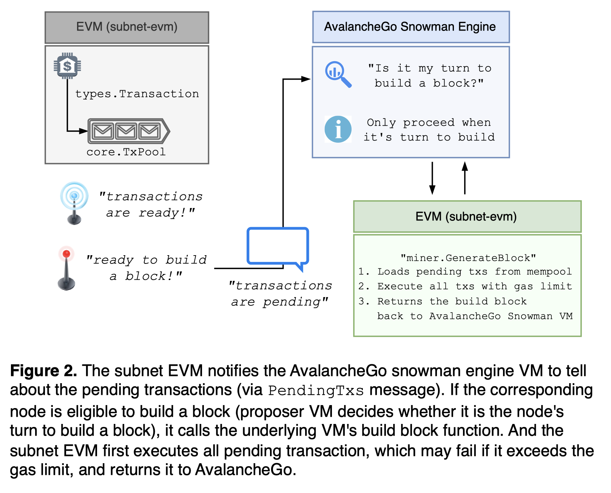
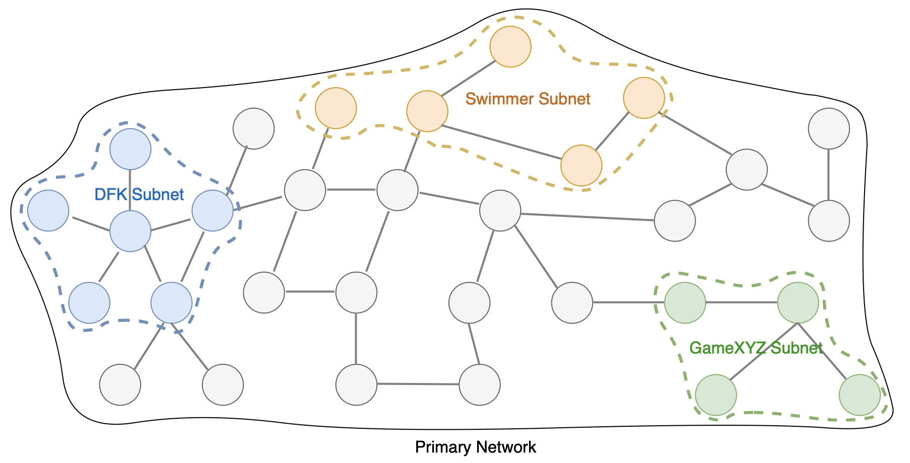

Avalanche consensus
Who am I?
- 이규호 (Gyuho Lee)
- Protocol Engineer, Ava Labs
- prev. Senior SDE, AWS EKS
- Top contributor to etcd
- github.com/gyuho
- linkedin.com/in/gyuho
- twitter.com/gyuhox
- t.me/leegyuho (Telegram)
What sets Avalanche apart?
"The fact that it works, it's fast, it scales, can grow and absorb any use case, can be used for compliant asset offerings. Bitcoin is single asset, single chain. Ethereum is multi-asset, single chain. Avalanche is multi-asset, multi-chain system. Most decentralized with fastest consensus finality."
Blockchain should ...
- Scale to millions nodes (decentralization)
- Consensus with sub-second finality (performance)
- Flexibility to support app-specific chain
Avalanche Consensus: Part I
☃️
Snowman protocol
Consensus
"Assume a collection of processes that can propose values. A consensus algorithm ensures that a single one among the proposed values is chosen." Leslie Lamport, Paxos Made Simple (2001)
Should this transaction be placed in a block or not?
PoW or PoS is NOT a consensus mechanism!
Consensus Until Now
Classical (Lamport 1998, Paxos/Raft/etcd)
- CFT (crash-fault tolerant)
- Quick finality but does not scale
- Quadratic message complexity
- Permissioned, requires precise membership
Consensus Until Now
Nakamoto (Bitcoin 2008)
- Robust, no need for precise membership
- High latency, low throughput
- Wastes energy, not green, not sustainable
Consensus Until Now
PBFT (1999)
- Powers many PoS networks (Tendermint, Casper)
- Committee/leader-based
- Can't scale easily ("leader/coordinator" dilemma)
- Quorum-based: must know all participants
- Fast when membership is small
- Deterministic safety (100% safe)
- Hard limit on the Byzantine adversaries
- Many are very complicated
Avalanche Consensus Family
- Published in 2020
- Instant finality, low latency (~1 sec)
- High throughput (>6,000 TPS)
- Scales >10-million nodes
- Robust, no need for precise membership
- Leaderless*
- Quiescent, green, sustainable
- Inspired by epidemic protocols and gossip networks
- New idea: deliberately metastable
Avalanche Sustainability
Binary Consensus
- Pick one
red /blue -- no correct answer - Adopt the majority color by repeated sub-sampling
- Consensus results in the entire network agreeing on either
red orblue - Even with 50/50 split, random perturbation in the sampling results in a single value being selected

At the beginning, pick any color (no correct answer)
Radomly sub-sample the network
"Red" is the majority from the sample
Adopt the majority color, "red"
Repeat this random sampling in parallel, in all nodes
Repeated random sampling perturbs conflicting state

Sequence of metastable process of random sampling
All converge to the same value (agreement)
"The protocol is designed to tip" (YouTube)
See also All Access with Emin Gün Sirer - Ep. 51 (2023)
Fast Finality
Avalanche == no block re-org, no longest chain rule
- Re-org in game? May lose item after tx revert
- Re-org in bridge? Must wait longer for source chain
- Re-org in payment? May lose money for goods
Avalanche Consensus: Part II
☃️
Real-world examples
Review: CFT consensus
Paxos/Raft == voting-based consensus
- Voting on a single value
- Two-phase voting
- Deterministic, requires quorum
- Static membership, permissioned
Review: BFT consensus
Avalanche/Snowman == binary consensus
- IT'S NOT YES/NO on specific transaction
- Simply decide YES on something (block)
- No correct answer, just choose one
- Probabilistic (requires quorum)
- Loose/dynamic membership, permissionless
"When" CFT consensus
Use Paxos/* for permissioned environment
- Kubernetes uses etcd for metadata storage
- All etcd nodes are gated behind private network
- ~10ms finality (within a single region)
Real-world challenges
- Consensus for each value limits write throughput
- Consensus itself does not give read linearizability
- Very hard to update membership (~5 members)
- Storage limit (soft-cap): 10 GiB
- Requires leader
"When" BFT consensus
Use BFT/Avalanche for permissionless environment
- No static membership, anybody can join consensus
- Avalanche network has >1,300 validators
- Block-based consensus, can batch transactions
- Can be leaderless
Real-world challenges
- Sybil attack resistance (e.g., fee, rate limit)
- No storage limit but longer state sync
- Merkl-ized states for data sync integrity
- Transaction mempool can be complicated
"How" CFT consensus: Raft
Phase 1. Elect leader that handles proposals
"How" CFT consensus: Raft
Phase 2. Agree on a single value by voting

"How" BFT consensus: Avalanche
Avalance/snowman builds up from "Slush"
"How" Avalanche consensus: EVM
Phase 1. Gossip transactions from mempool
"How" Avalanche consensus: EVM
Phase 2. Execute transactions and build a block
"How" Avalanche consensus: EVM
Phase 3. Issue a block to consensus and query its peers

"How" Avalanche consensus: EVM
Phase 4. Run binary consensus and finalize a block
Avalanche Subnet üî∫
What is Subnet?
Primary Network == Special Subnet
- X-chain is used for exchanging assets
- P-chain coordinates validators and subnets
- C-chain executes EVM contracts with ETH RPCs
Subnet validator must validate primary network!
Subnet (sub-network)

Subnets
Subnets provide failure isolation
Failure in one subnet does not impact the other!
Thus better fault tolerance and better reliability!

Contributions
- Explained how Avalanche consensus works
- Explained why Avalanche blockchain is scalable
- Reliability with the fastest tx finality
- Flexibility to run custom VMs with custom tokens
See talk.gyuho.dev/why-avalanche-2023q2.html for more platform info.